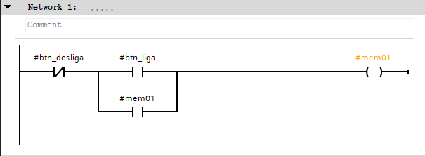
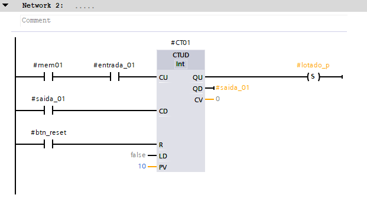
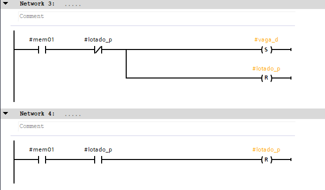
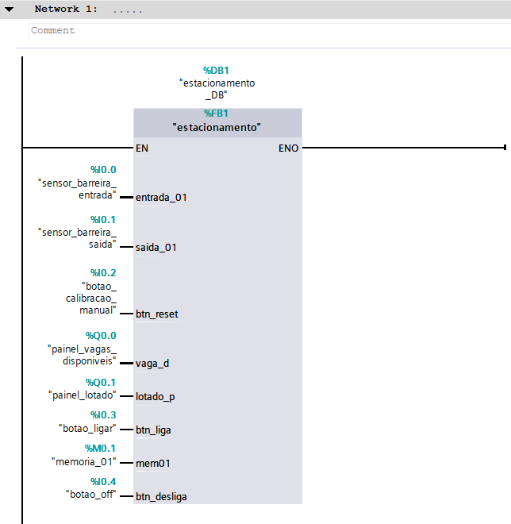

Tutorial TIA PORTAL
PASSO 1 Abrir o TIA Portal
1. Após instalar o TIA Portal, localize o atalho do software na área de trabalho e execute-o para iniciar o ambiente de programação.

PASSO 2 Criar um novo projeto
2. Na tela inicial do TIA Portal, selecione a opção "Criar novo projeto". Informe um nome para o projeto e, se desejar, altere o local onde ele será salvo.

PASSO 3 Definir o projeto
3. Digite um nome para identificar o projeto e confirme a criação clicando em "Criar". Aguarde o carregamento do ambiente de desenvolvimento.

PASSO 4 Adicionar dispositivo
4. Após a criação do projeto, clique em "Configurar um dispositivo" para inserir o controlador que será utilizado na aplicação.

PASSO 5 Catálogo de dispositivos
5. Clique em "Adicionar um dispositivo".

PASSO 6 Selecionar a família
6. Será exibida a janela do catálogo de equipamentos Siemens. Nela estão disponíveis as famílias de CLPs, IHMs e demais dispositivos suportados pelo TIA Portal. No catálogo, selecione a família SIMATIC S7-1200, utilizada em aplicações industriais de pequeno e médio porte.

PASSO 7 Selecionar a CPU
7. Escolha o modelo da CPU correspondente ao CLP utilizado no laboratório. Verifique também a versão de firmware antes de confirmar a seleção.

PASSO 8 Ambiente de programação
8. Após adicionar o dispositivo, o TIA Portal abrirá o ambiente principal de programação. À esquerda encontra-se a árvore do projeto e, ao centro, a área de trabalho.

PASSO 9 PLC Tags
9. Selecione a PLC TagsNesta etapa é possível visualizar e alterar diversos parâmetros de configuração do controlador.

PASSO 10 Configuração de TAGS
10. Abra a configuração da interface Default tag tables para definir os parâmetros de comunicação que serão utilizados entre o computador e o CLP.

PASSO 11 Configurar o Nome e Endereço
11. Informe o nome, e o endereço em Address. Essas configurações permitirão a comunicação entre o computador e o CLP.

PASSO 12 Address
12. Você pode mudar o identificador , o address e o Bit number .

PASSO 13 Verificar
13. Verifique se todas as configurações estão corretas.

PASSO 14 Program Blocks
14. Na aba a esquerda PLC programming/Project tree, abra a pasta Program blocks .

PASSO 15 Main
15. Dê um duplo clique em Main , para programar em ladder.

PASSO 16 Programar em LADDER
16. Acima de Network 1: e block title, você encontrará os componentes da linguagem ladder NA , NF , Bobina , basta arrastar o componente para a Network desejável, que ele ficará na linha de programação

PASSO 17 Nomear componente
17. Você pode nomear qualquer componente clicando nas tags acima deles <??.?> , pode clicar no ícone a direita para aparecer todos os nomes que você configurou em PLC tags.

PASSO 18 Linha de programação
18. Assim que você terminar de nomear, a linha de programação pode estar parecida com a Network 1 .

PASSO 19 Selo
19. Clicando na seta que vem de cima e depois vai para frente →, você pode criar um selo, como visto no Network 2, assim que você clicar nesta seta, selecione um componente, logo após, clique na seta para cima ↑, para fechar o selo.

PASSO 20 Instructions
20. Na aba que fica à direita, possui diversas instruções que você poderá configurar a que quiser, aqui veremos Timer operations que é uma Basic Instruction. Clique para abrir em Timer.

PASSO 21 Programar Timer
21. Clique no timer desejado "TON" e arraste para linha de programação, assim que arrastar e soltar, você poderá nomeá-lo e escolher se é manual ou automático.

PASSO 22 Timer na linha de programção
22. Após a configuração ele deve ficar assim, como na linha do Network 2.

PASSO 23 Tempo
23. Você pode configurar o tempo do seu temporizador cliquando a direita dele logo abaixo nas ??? , assim você pode escolher o tempo, escrevendo apenas 3s , s = segundos.

PASSO 24 Timer finalizado
24. Assim que finalizar o seu TON e seus componentes poderão ficar assim, como no Network 2.

PASSO 25 Compilar
25. Clique no ícone Compile, para compilar seu projeto, fica na barra de tarefas superior, logo abaixo de Window na imagem 25

PASSO 26 Check azul
26. Se configurado o programa corretamente, no terminal inferior do Tia Portal, deve aparecer Compiling finished , sem nenhum erro e com check azul.

PASSO 27 Simular
27. Caso você não possua um PLC em mãos e queira simular, vá na aba da esquedar em Device configuration , no meio da tela, clique no seu PLC com o botão direito e clique em Change device .

PASSO 28 Escolha dispositivo e versão
28. Escolha um dispositivo disponível para simulação, desejável um com versão 4.0 ou superior e clique em OK.

PASSO 29 Configuração
29. Como é educacional, não vou precisar de proteção para esses exemplos, então vamos desmarcar as proteções e IPs nos checkbox e clicar em next.

PASSO 30 Checkbox
30. Desmarque a caixa de seleção, deverá ficar como na imagem 30.

PASSO 31 Comunicação
31. Como é educacional vamos desmarcar novamente esse checkbox no modo para o PC e HMI e clique em next.

PASSO 32 Permissão
32. Vamos desativar o controle de acesso para esse conteúdo educacional, caso precise ative e configure.

PASSO 33 Administrador
32. Não vamos usar um setup para administrador neste conteúdo, clique em next.

PASSO 34 Acesso
33. Vamos desativar o acesso sem autenticação neste conteúdo e clicar em next.

PASSO 35 Controle de acesso
34. Vamos pular o controle via access levels neste conteúdo e clicar em next.

PASSO 36 Overview
35. Ao chegar em overview clique em Finish .

PASSO 37 Main e Start Simulation
37. Volte em Main para simularmos a programação em Ladder. Clique em Start Simulation para abrir o PLCSIM, para ter uma comunicação com o Tia Portal.

PASSO 38 S7-PLCSIM V20
38. Assim que clicar em Start Simulation, irá abrir a tela do S7-PLCSIM, espere conectar com seu IP.

PASSO 39 Tia Portal
39. Volte para o Tia Portal , selecione na tabela seu IP e clique em Load.

PASSO 40 Terminal
40. No terminal deverá aparecer vários checks, afirmando que a conexão foi bem sucedida.

PASSO 41 Óculos
41. Clique no ícone de um óculos e um play logo acima das networks e a simulação irá começar.

PASSO 42 Memória
42. Você pode mudar o bit de memória para 1, para começar a simulação, clique com o botção direito em cima do componente desejável, vá em Modify e Modify to 1 .

PASSO 43 Simulação Timer
43. Neste exemplo, assim que passou energia pelo M0.1 Tag_1, o timer de 3s inicializou, quando terminou foi acionada a bobina. Você poderá ver melhor neste vídeo.

PASSO 44 Salvar o projeto
44. Após toda a configuração, salve o projeto, indo em Project no canto superior direito, podendo clicar em Save e Save as... Ladder. Clique aqui para acessar um tutorial no youtube para ver a configuração padrão.

EXEMPLO Semáforo
1. Network 1 Ladder.

EXEMPLO Semáforo
1.2 Network 2 Ladder.

EXEMPLO Semáforo
1.3 Network 3 Ladder.

EXEMPLO Semáforo Geral
1.3.1 Ladder completo do semáforo Ladder. Caso queira ver o funcionamento, Clique aqui.

EXEMPLO Vagas em Estacionamento
1.4 Ladder na Function Block de contagem de vagas em um Estacionamento.

EXEMPLO Vagas em Estacionamento
1.4.1 Ladder na Function Block de contagem de vagas em um Estacionamento.

EXEMPLO Vagas em Estacionamento
1.4.2 Ladder na Function Block de contagem de vagas em um Estacionamento.

EXEMPLO Vagas em Estacionamento
1.4.3 Data Block na Main OB1.
